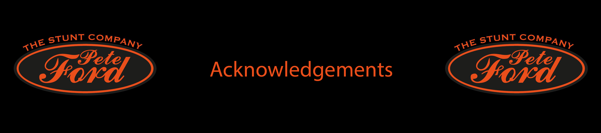

A selection of stunt work across film and television productions
| Year | Title | Role | Director | Type |
|---|---|---|---|---|
| 2026 | Young Sherlock | Stunt Performer | Anders Engström | TV |
| 2026 | Under Salt Marsh | Stunt Performer | Claire Oakley | TV |
| 2024-2026 | Call the Midwife | Stunt Coordinator | David O'Neill | TV |
| 2025 | The War Between the Lnd and the Sea | Stunt Performer | Dylan Holmes Williams | TV |
| 2025 | Riot Women | Stunt Coordinator | Amanda Brotchie | TV |
| 2024-2026 | Blue Lights | Stunt Coordinator + Second Unit Director | Jack Casey | TV |
| 2025 | The Girlfriend | Stunt Coordinator | Andrea Harkin | TV |
| 2025 | The Fantastic Four: First Steps | Stunt Performer | Matt Shakman | Film |
| 2025 | Too Much | Stunt Coordinator | Lena Dunham | TV |
| 2020-2025 | Grantchester | Stunt Coordinator + Stunt Performer | Rob Evans | TV |
| 2025 | Art Detectives | Stunt Performer | Jennie Paddon | TV |
| 2025 | Dept. Q | Stunt Double | Scott Frank | TV |
| 2025 | Mobland | Assistant Stunt Coordinator + Stunt Driver | Anthony Byrne | TV |
| 2025 | Gangs of London | Stunt Performer | Hongsun Kim | TV |
| 2025 | Snow white | Stunt Performer | Marc Webb | Film |
| 2025 | Towards Zero | Stunt Coordinator | Sam Yates | TV |
| 2025 | Cleaner | Stunt Coordinator | Martin Campbell | Film |
| 2025 | Mickey 17 | Stunt Performer | Bong Joon Ho | Film |
| 2025 | Back in Action | Stunt Driver | Seth Gordon | Film |
| 2025 | The Rig | Stunt Performer | David Macpherson | TV |
| 2024 | Kraven the Hunter | Stunt Driver | J.C. Chandor | Film |
| 2021-2024 | Shetland | Stunt Coordinator + Stunt Performer | Ruth Paxton | TV |
| 2024 | The Marlow Murder Club | Stunt Coordinator | Steve Barron | TV |
| 2024 | Recursive Dreams | Stunt Coordinator | Max Vanderspuy | Film |
| 2024 | Blitz | Stunt Performer | Steve McQueen | Film |
| 2022-2024 | House of the Dragon | Stunt Performer | Clare Kilner | TV |
| 2024 | Red Eye | Stunt Performer | Kieron Hawkes | TV |
| 2024 | Damaged | Stunt Driver | Director Name | Film |
| 2024 | Ghostbusters: Frozen Empire | Stunt Performer | Gil Kenan | Film |
| 2024 | McDonald & Dodds | Stunt Performer | Stephen Gallacher | TV |
| 2024 | The Gentlemen | Stunt Performer | Guy Ritchie | TV |
| 2024 | True Love | Stunt Double | Carl Tibbetts | TV |
| 2008-2024 | Silent Witness | Stunt Performer | Tracey Rooney | TV |
| 2024 | True detetive | Stunt Performer | Issa López | TV |
| 2023 | Slow Horses | Stunt Performer | Adam Randall | TV |
| 2023 | Wonka | Stunt Performer | Paul King | Film |
| 2023 | Payback | Stunt Coordinator + Stunt Performer | Jennie Darnell | TV |
| 2022-2023 | Screw | Stunt Performer | Issa López | TV |
| 2023 | Annika | Stunt Performer | Issa López | TV |
| 2023 | World on Fire | Stunt Coordinator | Drew Casson | TV |
| 2023 | The Flash | Stunt Performer | Andy Muschietti | Film |
| 2023 | Ted Lasso | Stunt Coordinator | Declan Lowney | TV |
| 2022 | Your Christmas or Mine? | Stunt Coordinator | Jim O'Hanion | Film |
| 2022 | The Peripheral | Stunt Performer | Alrick Riley | TV |
| 2016-2022 | Outlander | Stunt Performer | Metin Hüseyin | TV |
| 2022 | Fantastic Beasts: The Secrets of Dumbledore | Stunt Performer | David Yates | Film |
| 2022 | The Ipcress File | Stunt Performer | James Watkins | TV |
| 2022 | The Batman | Stunt Performer | Matt Reeves | Film |
| 2022 | Cheaters | Stunt Rigger | Elliot Hegarty | TV |
| 2018-2022 | A Discovery of Witches | Stunt Double | Jamie Donoughue | TV |
| 2012-2021 | Casualty | Stunt Performer + Stunt Double + Stunt Driver | Steve Hughes | TV |
| 2021 | Eternals | Stunt Performer | Chloé Zhao | Film |
| 2021 | Ridley Road | Stunt Performer | Lisa Mulcahy | TV |
| 2021 | Britannia | Stunt Performer | Ben Gregor | TV |
| 2021 | Infinite | Stunt Performer | Antoine Fuqua | Film |
| 2021 | Fast & Furious 9 | Stunt Performer | Justin Lin | Film |
| 2021 | The Nevers | Stunt Performer | Andrew Bernstein | TV |
| 2022 | Fantastic Beasts: The Secrets of Dumbledore | Stunt Performer | David Yates | Film |
| 2021 | Justice League | Stunt Performer | Zack Snyder | Film |
| 2021 | The One | Stunt Performer | Jeremy Lovering | TV |
| 2021 | Coronation Street | Stunt Driver + Stunt Double | John Anderson | TV |
| 2020 | Tin Star | Stunt Driver | Justin Chadwick | TV |
| 2020 | The Witches | Utility Stunts | Robert Zemeckis | Film |
| 2020 | The Great | Stunt Performer | Colin Bucksey | TV |
| 2020 | Shakespeare & Hathaway: Private Investigators | Stunt Performer + Stunt Double | Piotr Szkopiak | TV |
| 2020 | The Stranger | Stunt Performer | Daniel O'Hara | TV |
| 2020 | COBRA | Stunt Performer + Stunt Double | Al Mackay | TV |
| 2019 | Star Wars: Episode IX - The Rise of Skywalker | Stunt Performer | J.J. Abrams | Film |
| 2019 | Treadstone | Stunt Performer | Brad Anderson | TV |
| 2019 | The Feed | Stunt Performer | Carl Tibbetts | TV |
| 2019 | Greed | Stunt Double | Michael Winterbottom | Film |
| 2019 | Pennyworth | Stunt Performer | Rob Bailey | TV |
| 2015-2019 | Game of Thrones | Stunt Performer | David Nutter | TV |
| 2019 | Dumbo | Stunt Performer + Utility Stunts | Tim Burton | Film |
| 2019 | Agatha Raisin | Stunt Double | Roberto Bangura | TV |
| 2018 | Fantastic Beasts: The Crimes of Grindelwald | Stunt Performer | David Yates | Film |
| 2018 | Overlord | Stunt Double | Julius Avery | Film |
| 2018 | Outlaw/King | Stunt Performer | David Mackenzie | Film |
| 2018 | Christopher Robin | Stunt Performer | Marc Forster | Film |
| 2018 | Solo: A star Wars Story | Stunt Performer | Ron Howard | Film |
| 2018 | Electric Dreams | Stunt Double | Michael Dinner | TV |
| 2017 | Justice League | Stunt Performer | Zack Snyder | Film |
| 2017 | American Assassin | Stunt Performer | Michael Cuesta | Film |
| 2017 | Wonder Woman | Stunt Performer | Patty Jenkins | Film |
| 2017 | King Arthur: Legend of the Sword | Stunt Performer | Guy Ritchie | Film |
| 2017 | Lucky Man | Stunt Driver | Jamie Childs | TV |
| 2017 | The Take Down | Actor | David Newton | Film |
| 2016 | Rogue One | Stunt Performer | Gareth Edwards | Film |
| 2016 | Jet Trash | Stunt Performer | Charles Henri Belleville | Film |
| 2016 | Fantastic Beasts and Where to Find Them | Stunt Performer | David Yates | Film |
| 2016 | Doctor Strange | Stunt Performer | Scott Derrickson | Film |
| 2016 | Miss Peregrine's Home for Peculiar Children | Stunt Performer | Tim Burton | Film |
| 2016 | Unattended Item | Stunt Performer | Filippos Vokotopoulos | Film |
| 2016 | Bridget Jones's Baby | Stunt Performer | Sharon Maguire | Film |
| 2016 | The Legend of Tarzan | Stunt Performer | David Yates | Film |
| 2016 | Now You See Me 2 | Stunt Performer | Jon M. Chu | Film |
| 2016 | Criminal | Stunt Performer | Ariel Vromen | Film |
| 2016 | London Has Fallen | Stunt Performer | Babak Najafi | Film |
| 2016 | Grimsby | Stunt Performer | Louis Leterrier | Film |
| 2016 | Dad's Army | Stunt Performer | Oliver Parker | Film |
| 2015-2016 | Galavant | Stunt Performer | John Fortenberry | TV |
| 2015 | Spectre | Stunt Double | Sam Mendes | Film |
| 2015 | Pan | Stunt Performer | Joe Wright | Film |
| 2015 | Legend | Stunt Performer | Brian Helgeland | Film |
| 2014 | Atlantis | Stunt Performer | Justin Molotnikov | TV |
| 2014 | Exodus: Gods and Kings | Stunt Performer | Ridley Scott | Film |
| 2014 | The Great Fire | Stunt Performer | Jon M. Chu | TV |
| 2014 | Dracula Untold | Stunt Performer | Gary Shore | Film |
| 2014 | 24: Live Another Day | Stunt Performer | Jon Cassar | TV |
| 2014 | Maleficent | Stunt Performer | Robert Stromberg | Film |
| 2013 | Thor: The Dark World | Stunt Performer | Alan Taylor | Film |
| 2013 | Kick-Ass 2 | Stunt Performer | Jeff Wadlow | Film |
| 2013 | The World's End | Stunt Performer | Edgar Wright | Film |
| 2013 | Jack the Giant Slayer | Stunt Performer | Bryan Singer | Film |
| 2013 | In Fear | Stunt Driver | Jeremy Lovering | Film |
| 2013 | Jack the Giant Slayer | Stunt Performer | Bryan Singer | Film |
| 2011-2012 | Inspector George Gently | Stunt Performer | Nicholas Renton | TV |
| 2012 | Coward | Stunt Performer | Dave Roddham | Film |
| 2012 | Snow White and the Huntsman | Stunt Performer | Rupert Sanders | Film |
| 2012 | John Carter | Stunts (as Pete Ford) | Andrew Stanton | Film |
| 2012 | Midsomer Murders | Stunt Performer + Stunt Double | Renny Rye | TV |
| 2011 | War Horse | Stunt Performer | Steven Spielberg | Film |
| 2011 | Hugo | Stunt Performer | Martin Scorsese | Film |
| 2011 | Johnny English Reborn | Stunt Performer | Oliver Parker | Film |
| 2011 | Captain America: The First Avenger | Stunt Performer | Joe Johnston | Film |
| 2011 | Harry Potter and the Deathly Hallows: Part 2 | Stunt Performer | David Yates | Film |
| 2011 | X-Men: First Class | Stunt Performer | Matthew Vaughn | Film |
| 2011 | Vera | Stunt Double | Peter Hoar | TV |
| 2010 | Gulliver's Travels | Stunt Performer | Rob Letterman | Film |
| 2010 | Prince of Persia: The Sands of Time | Stunt Performer | Mike Newell | Film |
| 2011 | M.I.High | Stunt Performer | Simon Hook | TV |
| 2009 | Harry Brown | Stunt Double | Daniel Barber | Film |
| 2008 | Harley Street | Stunt Performer | Paul Whittington | TV |
| 2008 | The Dark Knight | Stunt Performer | Christopher Nolan | Film |
| 2008 | Waking the Dead | Stunt Performer | Andy Hay | TV |
| 2007 | National Treasure: Book of Secrets | Stunt Performer | Jon Turteltaub | Film |
| 2007 | The Golden Compass | Stunt Performer | Chris Weitz | Film |
| 2007 | Death Defying Acts | Stunt Performer (As Pete Ford) | Gillian Armstrong | Film |
| 2007 | Elizabeth: The Golden Age | Stunt Performer (As Pete Ford) | Shekhar Kapur | Film |
| 2007 | Harry Potter and the Order of the Phoenix | Stunt Performer | David Yates | Film |
| 2007 | Holby Blue | Stunt Performer | Martin Hutchings | TV |
| 2006 | The Da Vinci Code | Stunt Performer | Ron Howard | Film |
| 2005 | Harry Potter and the Goblet of Fire | Stunt Performer | Mike Newell | Film |
| 2005 | The Golden Hour | Stunt Performer | Julian Holmes | TV |
| 2005 | Batman Begins | Stunt Performer | Christopher Nolan | Film |
| 2002 | Harry Potter and the Chamber of Secrets | Stunt Performer | Chris Columbus | Film |